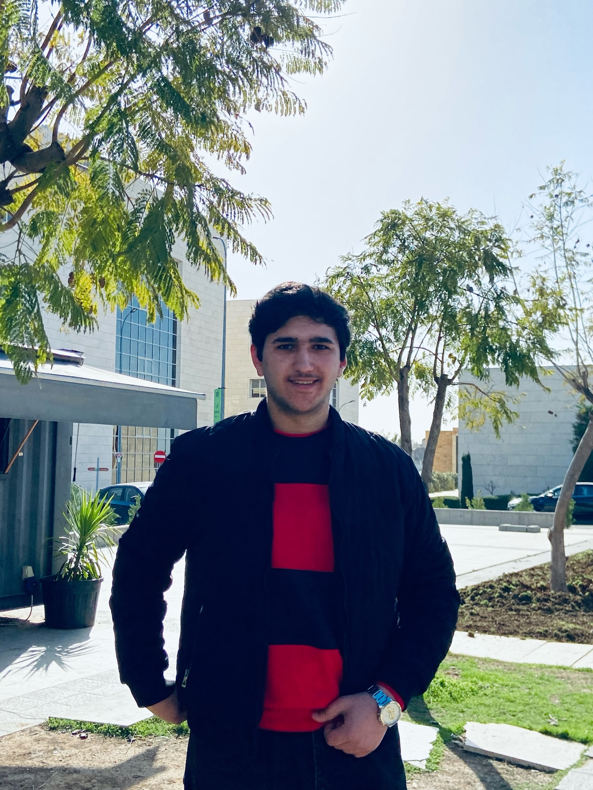

IT student building modern web projects and exploring AI-powered applications.
Creating responsive, accessible web interfaces with modern HTML, CSS, and JavaScript frameworks.
Building intelligent applications that leverage AI APIs to automate tasks and enhance user experiences.
Developing complete web applications from database design to user interface deployment.

I'm an IT student passionate about web development, AI applications, and creating intuitive user experiences. With a focus on modern technologies and clean code, I craft solutions that solve real-world problems. I'm currently pursuing my degree while building exciting projects in my spare time.
My journey in programming started with curiosity about how websites work, which led me to explore HTML, CSS, and JavaScript. Over time, I've expanded my skills to include React, Node.js, and various AI tools. I believe in continuous learning and building things that make a difference in people's lives.
When I'm not coding, you can find me exploring new technologies, contributing to open source projects, or sharing my knowledge through blog posts and tutorials. Let's connect and build something amazing together!